Hi there!
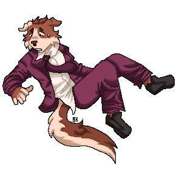
You've discovered my humble and currently a heavy work in progress pet project I use to get more comfortable tinkering with html/css (and js at some point) and generally to collect my fave things in one place. I promise, it would become a neater place with time :D
I didn't finish all the pages I plan to have here yet, but hopefully I'll fix that soon!
I believe that'd be a right thing to let you know about the Content warnings? For now I believe this website is rather #familyfriendly and I think I'd prefer to keep its relatively neutral tone. I would try to mark any possibly triggering content appropriately, but please keep in mind that I'm an adult person. Thus, you can see some swearing here and there and there might be depictions of moderate violence/blood, as well as artistic nudity, on my artworks. Furthermore, both my own stories and stories of the media I admire often deal with darker topics, which, as I said, I'll try my best to mark properly when discussing, but still an important head-ups.
Accessibility-wise, I try my best to avoid flashing animated content (and gifs in general, except for site links buttons) and clashing colors, so hopefully no jumpscares on this side. I use javascript for tag system in art gallery/diary entries + to stop the gifs on the homepage, so the sorting features and stop/play gif feature won't work if you have it turned off, but except for that it shouldn't affect your experience much.
/ last upd. 22 oct 2026
Playlist
Nothing fancy for now, I'm just messing around :р
Websites corner
Yo, I've finally made a button for my site! Feel free to link to me if you want!
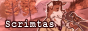
Note: some of buttons are gifs! I have the motion turned off on this page by default, so click the button if you want to see animations!
Neigbours!
Fellow mutuals from the indieweb world, hiii
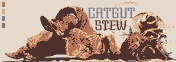
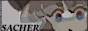
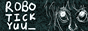
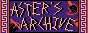
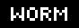
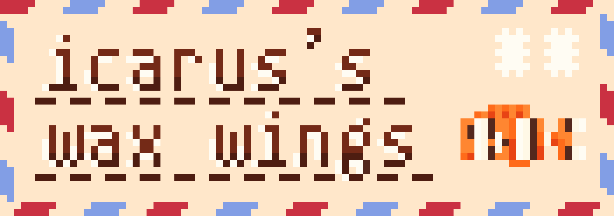
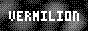
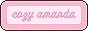
Looking respectfully
Various cool sites that have been a great inspiration for me! The list is, in fact, longer, planning to update it!
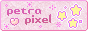
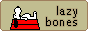
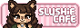
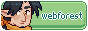
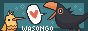
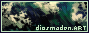
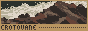
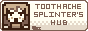
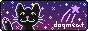
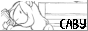
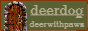

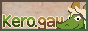
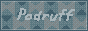
/ last upd. 22 oct 2026